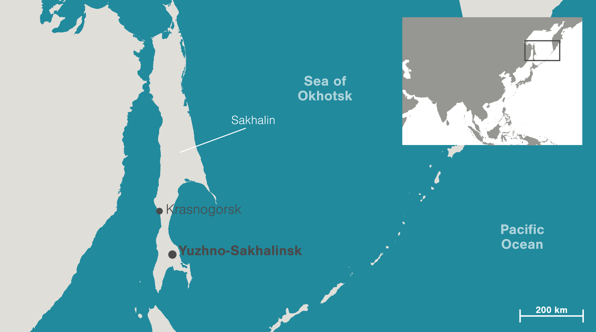

<!DOCTYPE html>
<html lang="en">
<head>
    <meta charset="UTF-8">
    <meta name="viewport" content="width=device-width, initial-scale=1.0">
    <title>Sakhalin's Hidden Gems</title>
    <link rel="stylesheet" href="styles.css">
</html>
</head>
<body>
    <header class="hero">
        <section class="hero_content"></section>
        <h2>Top 3 hidden gems of</h2>
        <h1>SAKHALIN ISLAND</h1>
        <section class="intro">
            <div class="intro-text">
                <h3>Welcome to my blog!</h3>
                <p>Hi, I’m Victoria!I live in Canada now but I grew up on the Sakhalin Island. Never heard of it? Not surprising. It’s a stunning but very little-known corner of Russia, tucked in the Pacific Ocean just above Japan and its shape somewhat resembles a fish! </p>
                <p>Today, Sakhalin island is growing in popularity as a tourist attraction. Obviously it’s not as famous, touristy and warm as Bali or Mexico, but to me it’s a true hidden gem, filled with breathtaking nature and unforgettable memories. And since I want more people to know about this magnificent spot, I want to share my Top 3 favorite places on the island, the ones I cherish and miss the most. </p>
            </div>
        <div class="sakhalin-image">
            
        </section>
    </header>
    <main>
        <section>
            <h3>1. Lake Busse</h3>
            
            <p>Don’t let the name fool you. Lake Busse isn’t actually a lake, but a saltwater lagoon in Southern Sakhalin. What makes it so exceptional and magical? At low tide, massive oyster beds rise from the water. And those are not your Canadian oysters, but giant fresh from the ocean Pacific oysters that you can pick, shuck, and eat right on the spot.</p>
            <p>Imagine walking across a field of oysters, each one the size of a full meal. It’s a shellfish lover’s dream, unlike anything else on Earth. </p>
            <p>For me, it’s more than just nature’s wonder, it’s a piece of my heart. My dad built a small eco-hotel there, where every summer our family used to gather to fish, relax, and feast on oysters together. The moments I've spent there are some of my most precious memories.</p>
        </section>
        <section>
            <h3>2.  Gorny Vozdukh (“Mountain Air”)</h3>
            
            <p>Right in the heart of Yuzhno-Sakhalinsk lies a big hill. Back when I lived on the island, it was my favorite spot to hike, bike, and breathe in the fresh mountain air. The trails lead through valleys, forests, and springs all the way up to a peak with surreal panoramic views. </p>
            <p>In winter, the hill transforms into a ski resort called Gorny Vozdukh, or “Mountain Air.” It’s not as grand as the Alps or Rockies, but it has its own charm. The slopes are perfect for beginners and intermediate skiers, and the cozy lodges offer a warm retreat after a day on the snow. It's the perfect winter sports escape just minutes from the city. The best part? Night skiing! Under the glow of lights, you get a stunning view of the city spreading wide below. Skiing down those hills, surrounded by pristine nature, is an experience I deeply miss.</p>
        </section>
        <section>
            <h3>3. Aniva Lighthouse </h3>
            
            <p>At the southern tip of Sakhalin stands the Aniva Lighthouse. For locals, it is truly a legendary structure. Built by the Japanese in 1939, it’s a masterpiece of engineering of its time. The lighthouse was active until 2006, then it was abandoned to be battered by storms and adventure-seekers. Nowadays it’s half-ruins, half-museum of history and fully a breathtaking spot with a lonely tower rising against the wild Pacific, in one of the most inaccessible spots on Earth. </p>
            <p>Reaching the lighthouse is an adventure in itself. Getting there isn’t easy, about a 3 hour drive from the island capital on an off-road vehicle, then a 1.5-hour boat ride through waves  and the cries of fearless gulls that circle above. Stepping inside, you’ll find crumbling halls and echoes of the past… but outside, you’re rewarded with cinematic views that feel straight out of another reality.  Visiting Aniva was unforgettable. Its  haunting, mysterious, and utterly breathtaking.</p>
        </section>
    </main>
    <footer>
        <p>Thanks for reading! I hope you enjoyed this little tour of my favorite places on Sakhalin Island. If you ever get the chance to visit, I promise you won’t regret it. Until then, I’ll be dreaming of those oysters, mountain air, and the lonely lighthouse.</p>
    </footer>
</body>
</html> 